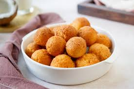

Description
Nigerian buns are popular Nigerian street foods.
They have sweet and crunchy exterior and soft pillow interior.
Ingridients
- All Purpose Flower
- Butter
- Eggs
- Milk
- Sugar
- Flavouring of choice
- Oil for deep frying
Steps
- Mix dry ingridients together
- Create well in middle of dry ingredients bowl and pour wet ingridients
- Mix until it forms a thick batter
- Allow batter to rest for 5 minutes
- Heat up oil in the meantime
- Use hand to scoop batter into ball shape
- Drop scooped up batter into oil
- Fry unti golden brown
- Repeat steps 6 and 8 until batter is exhausted
- Eat your homemade Nigerian Buns